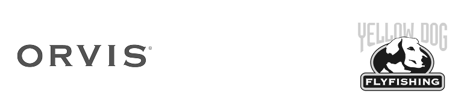

★★★★★
“Guest quote placeholder — the fishing, the guides, the camps and the feeling of fresh water every day.”
Taimen fly fishing in Mongolia · Since 2004
Small-group, catch-and-release float trips on the Onon and Delgermurun rivers. New water every day — your camp moves ahead of you.
Price given on enquiry · Our team replies within 48 hours

Khuvsgul · Northern Mongolia · 2 trips · June–August

DELGERMURUN RIVER · JUNE–AUGUST
Spectacular canyon water with fully serviced riverside ger camps. Our most comfortable float — new water every day while camp moves ahead of you.
Contact us about available dates
Combine with Headwaters Expedition

DELGERMURUN RIVER · JUNE–AUGUST
Our hardest trip: wade-and-walk the upper river with horse and camel support, sleeping in ger and wilderness tent camps far from any road.
Contact us about available dates
Combine with Classic Canyons Adventure
Khentii · Eastern Mongolia · 3 trips · September–October

ONON RIVER · SEPTEMBER–OCTOBER
A comfortable drift-boat float through the upper Onon valley, with riverside ger camps set up ahead of you each evening.
Contact us about available dates
Combine with Lower River
ONON RIVER · SEPTEMBER–OCTOBER
A more rugged float down the lower Onon — tent-tipi camps first, then gers, plus a wade-and-walk day. Roughing it, with the fishing to match.
Contact us about available dates
Combine with Buryat + Upper River

ONON RIVER · AUGUST–OCTOBER
The remote upper Onon from wilderness tent camps — just two anglers per departure, as far from other people as the river runs.
Contact us about available dates
Combine with Upper + Lower River
Meet the founders
Short founder story — why they started in 2004, their connection to the rivers, and their commitment to conservation, safety and guest comfort.
“Quote from the founders about what makes a trip with us different.”Our story & team

TRUSTED BY LEADING FLY-FISHING TRAVEL AGENCIES

“Guest quote placeholder — the fishing, the guides, the camps and the feeling of fresh water every day.”
“Guest quote placeholder — the fishing, the guides, the camps and the feeling of fresh water every day.”
“Guest quote placeholder — the fishing, the guides, the camps and the feeling of fresh water every day.”
“Guest quote placeholder — the fishing, the guides, the camps and the feeling of fresh water every day.”
“Guest quote placeholder — the fishing, the guides, the camps and the feeling of fresh water every day.”
“Guest quote placeholder — the fishing, the guides, the camps and the feeling of fresh water every day.”


Tell us your preferred trip and dates — our team replies within 48 hours with availability and pricing.
Prices on request · Small groups of 2–8 anglers · Since 2004